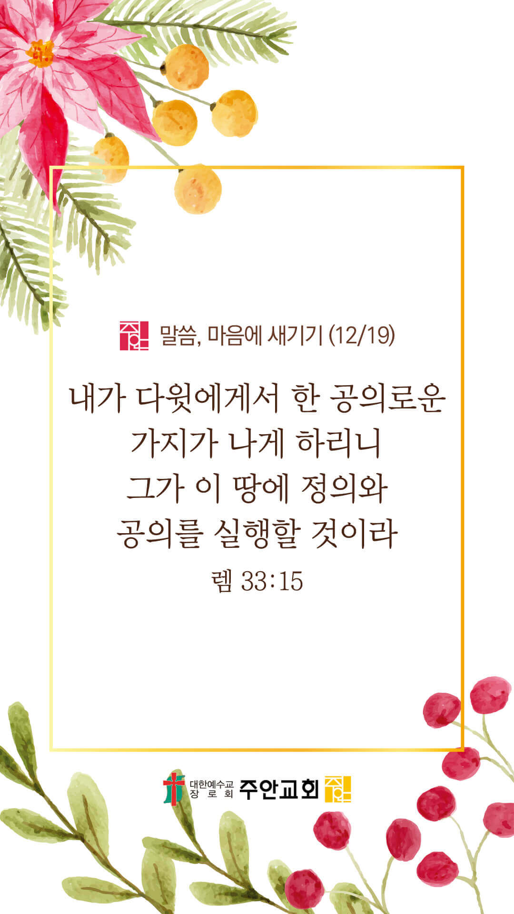

기도실 안내
2021년 12월 19일 (주일)
- 온라인 기도실은 온 회중이 함께 주님 앞으로 나아가는 자리입니다
- 30분 정도 여유를 가지고 하시기 바랍니다
- 말씀과 묵상, 찬양과 기도로 나아갑니다
- 배경 음악이 나올 수 있습니다 볼륨을 조절해주세요
준비가 되셨으면 아래의 버튼을 눌러주세요
할렐루야
내 영혼아 여호와를 찬양하라
시 146:1
- 가사를 묵상하며 읽습니다
마음이 상한 자를 고치시는 주님
하늘의 아버지 날 주관하소서
주의 길로 인도하사 자유케 하소서
새 일을 행하사 부흥케 하소서
의에 주리고 목이 마르니
성령의 기름 부으소서
의에 주리고 목이 마르니
내 잔을 채워 주소서
할렐루야
내 영혼아 여호와를 찬양하라
시 146:1
- 가사를 묵상하며 읽습니다
성령으로 채우사 주 보게 하소서
주의 임재 속에 은혜 알게 하소서
주 뜻대로 살아가리 세상 끝날까지
나를 빚으시고 새 날 열어주소서
의에 주리고 목이 마르니
성령의 기름 부으소서
의에 주리고 목이 마르니
내 잔을 채워 주소서
할렐루야
내 영혼아 여호와를 찬양하라
시 146:1
마음이 상한자를 by 쉐아르싱어즈
위의 찬양이 끝나면 말씀읽기를 눌러주시면 됩니다
주의 말씀은 내 발에 등이요
내 길에 빛이니이다 (시119:105)
오늘의 말씀입니다
음악 소리가 크면 조절하시기 바랍니다

마음의 묵상
예레미야 33:15
“그 날 그 때에 내가 다윗에게서 한 공의로운 가지가 나게 하리니 그가 이 땅에 정의와 공의를 실행할 것이라”
1. 혹시 우리나라에서 정의와 공의를 찾아보기 힘들다고 생각하시나요?
2. 메시아 예수그리스도께서 무엇을 행하실 것이라고 말씀하시나요?
3. 대한민국이 정의와 공의가 살아있는 나라 되게 해달라고 잠시 기도합시다
제가 먼저 작은 밀알이 되길...
회개, 삶의 방향을 바꾸는 결정
주님, 고쳐주세요 싸매어주세요
“여호와께서 ... 상심한 자들을 고치시며 그들의 상처를 싸매시는도다”
- 시편 147:2~3장 -
3분 정도 회개하며 주님 앞에 나아갑니다
사슴이 시냇물을 찾기에 갈급함 같이
시 42:1
- 다음의 말씀을 소리 내어 읽습니다
[요한일서 4:18-20]
18 사랑 안에 두려움이 없고 온전한 사랑이 두려움을 내쫓나니 두려움에는 형벌이 있음이라 두려워하는 자는 사랑 안에서 온전히 이루지 못하였느니라
19 우리가 사랑함은 그가 먼저 우리를 사랑하셨음이라
20 누구든지 하나님을 사랑하노라 하고 그 형제를 미워하면 이는 거짓말하는 자니 보는 바 그 형제를 사랑하지 아니하는 자는 보지 못하는 바 하나님을 사랑할 수 없느니라
하나님 나라
1. 하나님의 나라가 속히 이 땅에 임하게 하소서
하나님 아버지,
코로나19 바이러스와 자연재해로 인해 고통 받는 이들을 구원하여 주소서. 성탄을 맞아 우리의 구원자 예수 그리스도를 전 세계 모든 민족과 백성이 영접하며,
그 마음 속에 두려움과 절망이 사라지게 하시고, 오직 예수님만을 경배하게 하소서.
간절한 마음으로 3분 정도 기도합시다
남과 북
2. 남북한이 속히 복음으로 통일되게 하소서
하나님 아버지,
백성들을 핍박하고 억압하는 북한 정권의 잔악함을 용서하여주소서. 김정은 위원장을 비롯한 모든 정치 지도자들에게 하나님을 두려워하며 백성을
사랑하는 선한 마음을 부어주소서. 그 땅에 하나님의 공의와 사랑이 강물처럼 흐르게 하소서.
간절한 마음으로 3분 정도 기도합시다
대한민국
3. 우리나라가 하나님을 경외하는 나라가 되게 하소서
하나님 아버지,
코로나19 바이러스의 확산을 막아주소서. 모든 국민들이 한 마음이 되어 거리두기 강화를 잘 준수하게 하시고,
거리두기 강화로 인해 고통을 겪을 소상공인들과 자영업자들을 도와주시고 그들을 위한 실제적인 도움의 방안이 마련되게 하소서.
간절한 마음으로 3분 정도 기도합시다
한국교회
4. 한국교회가 성령으로 새롭게 부흥되게 하소서
하나님 아버지,
한국교회의 성도들이 일상의 현장에서 믿음의 싸움을 이겨나가게 하소서. 모든 성도들이 하나님의 부르심을 받아 세상을 향해 보내심을 받은
일상의 선교사임을 잊지 않게 하시고, 각자의 부여받은 역할을 통해 하나님께 영광을 돌려드리게 하소서.
간절한 마음으로 3분 정도 기도합시다
주안교회
5. 주안교회가 다음 세대를 세우는 선교적 교회가 되게 하소서
하나님 아버지,
주안의 모든 성도들이 성탄을 맞아 독생자 예수님 한분만으로 말미암아 기뻐하며 경배하는 성도들이 되게 하소서.
우리를 위한 하나님의 최선의 사랑이신 예수님을 다시 한번 내 인생의 주인으로 모시고, 내 구주 예수를 더욱 더 사랑하는 주안의 성도들이 되게 하소서.
간절한 마음으로 3분 정도 기도합시다
감사의 기도
- 오늘 기도를 인도하신 주님께 감사를 올려드립니다
- 아래의 구절을 읽고 주님께 감사의 마음을 올려드립시다
“나의 영혼이 잠잠히 하나님만 바람이여 나의 구원이 그에게서 나오는도다”
- 시편 62장 1절 -
고요한 가운데 잠시 침묵하시기 바랍니다
파송, 세상을 향하여
- 오늘의 온라인 기도를 마쳤습니다
기도를 들으신 주님께서 평안히 가라 하십니다
주님께서 우리와 함께 하시니 두려울 것이 없습니다
새벽을 깨우며
- 새벽기도회 안내입니다